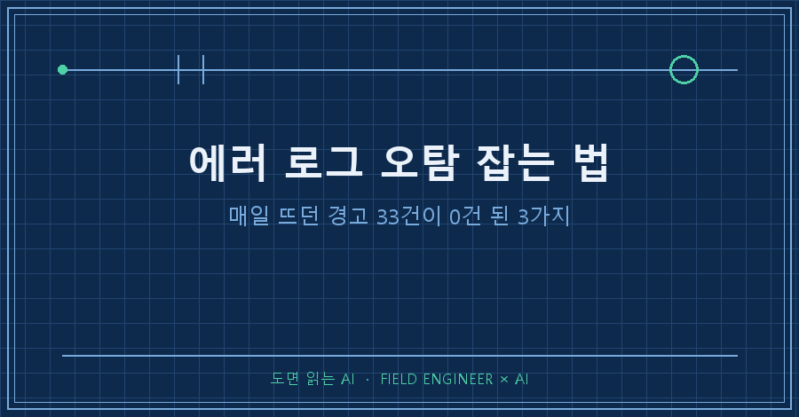
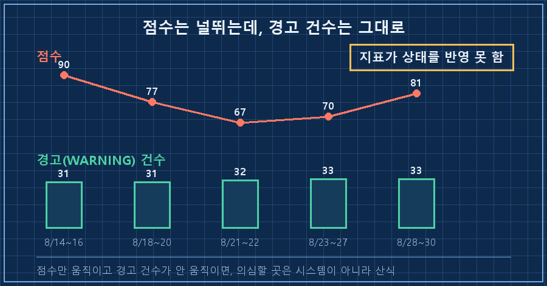
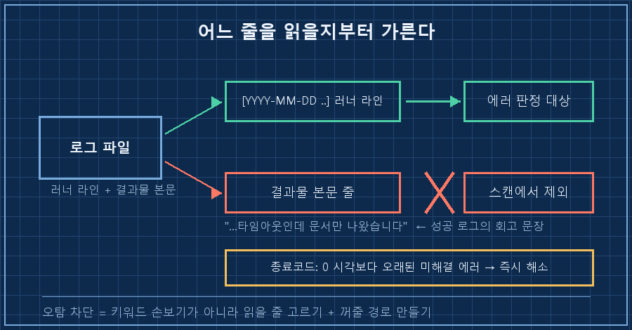
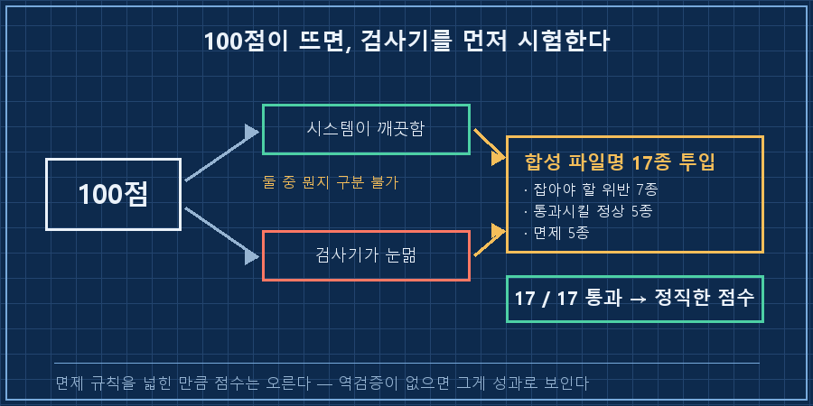

자동 점검 점수가 70점이라길래 어디가 망가졌나 싶어 반나절을 뒤졌습니다.
망가진 건 시스템이 아니라 점수 쪽이었고, 깎인 점수의 절반이 에러 로그 오탐이었어요.
결론부터 못 박고 시작할게요.
자동 점검에서 경고가 몇 달째 안 줄어든다면, 대부분은 진짜 고장이 아니라 에러 로그 오탐입니다. 오탐은 보통 세 갈래에서 나와요. 프로그램이 뱉은 본문 글자가 에러 키워드에 걸리는 것, 이미 복구됐는데 그 에러를 꺼줄 경로가 없는 것, 점수 산식이 부분 개선을 0점으로 처리하는 것. 셋 다 코드 몇 줄로 막힙니다.
2026년 8월 기준이고요. 매일 정해진 시각에 스크립트가 돌고, 결과를 로그로 남기고, 그 로그를 다시 자동으로 훑어 경고를 띄우는 구조면 언어나 도구를 안 가리고 그대로 옮겨집니다.
저는 설비 쪽에서 십오 년을 보냈어요. 경보등이 하루 종일 켜져 있는 현장을 몇 번 봤고, 그런 현장에서 사람들이 경보를 어떻게 대하는지도 봤습니다. 안 봐요, 아무도.
그래놓고 제 개인 자동화에 경고가 서른 몇 건씩 쌓인 걸 몇 달이나 그냥 두고 봤습니다..
1. 경고 건수는 그대로인데 점수만 널뛰었어요
먼저 한 일은 고장을 찾는 게 아니라 점수 추이를 표로 뽑는 거였습니다. 여기서 이상한 게 보였어요.
| 구간 | 점수 | CRITICAL | WARNING |
|---|---|---|---|
| 8/14~16 | 90 | 0 | 31 |
| 8/18~20 | 77 | 2 | 31 |
| 8/21~22 | 67 | 2 | 32 |
| 8/23~27 | 70 | 1 | 32~33 |
| 8/28~30 | 81 | 0 | 33 |
경고 건수는 31에서 33 사이로 사실상 고정인데 점수만 90과 67을 오갔습니다.
시스템이 진짜 나빠졌다 좋아졌다 했으면 경고 건수도 따라 움직였겠죠. 안 움직였어요.
이건 시스템 상태가 아니라 점수를 내는 방식의 문제였던 겁니다.

2. 19점을 뜯어보니 9점이 오탐이었습니다
점수 산식을 손으로 재현해서 실제 보고서와 대조했어요. 81.53이 나왔고 보고서는 81점, 정확히 맞았습니다. 그래서 깎인 19점을 이렇게 갈랐습니다.
| 깎인 자리 | 점수 | 진짜 고장인가 |
|---|---|---|
| 런타임 항목 (가중치 10) | -9.4 | 아니오, 전부 오탐 |
| 파일 규칙 (가중치 5) | -4.7 | 일부만 |
| 폴더 정리 (가중치 5) | -4.3 | 예 |
제일 큰 손실원인 런타임 미해결 에러 2건을 실물로 열어봤더니 둘 다 오탐이었어요.
하나는 이미 나은 병이었습니다. 새벽에 도는 리포트 작업이 8/21부터 며칠 타임아웃을 냈다가 8/26부터 정상으로 돌아왔거든요. 그런데 수집기의 해소 경로가 "7일 지나면 자동 만료" 하나뿐이라, 성공 실행이 닷새 이어져도 에러가 계속 살아 있었어요.
나머지 하나는 좀 어이없었습니다. 그 리포트 로그에는 결과물 본문이 통째로 들어갑니다. 8/26 로그, 그러니까 성공한 실행의 로그 안에 이런 문장이 있었어요.
...타임아웃인데 문서만 나왔습니다타임아웃이 왜 났는지 설명하는 문장이죠. 그런데 수집기는 타임아웃이라는 글자만 보고 이걸 새 에러로 집어넣었습니다. 성공한 실행이 자기 성공 로그에 쓴 회고 문장 때문에 실패로 잡힌 거예요..
에러 로그 오탐이라고 하면 정규식이 헐거워서라고 보통 생각하는데, 둘 다 아니었어요. 하나는 에러를 꺼줄 경로가 없어서, 하나는 읽지 말아야 할 줄까지 읽어서 생긴 겁니다.
3. 오탐 3종, 이렇게 막았습니다
전제는 단순합니다. 로그가 [YYYY-MM-DD HH:MM:SS] 같은 시각 접두어로 시작하는 줄을 갖고 있고, 실행이 끝날 때 종료코드를 한 줄 남기면 돼요. 파이썬 기준으로 적지만 정규식만 옮기면 다른 언어도 같습니다.
1단계. 결과물 본문 줄은 스캔에서 뺍니다.
출력물 본문이 섞이는 로그 소스에는 플래그를 주고, 러너가 찍은 구조화 라인만 봐요.
RUNNER_LINE = re.compile(r"^\[\d{4}-\d{2}-\d{2}[\sT]\d{2}:\d{2}:\d{2}")
if runner_only and not RUNNER_LINE.match(line):
continue2단계. 그 뒤로 성공한 적이 있으면 에러를 끕니다.
소스별 최근 성공 시각을 모아두고, 미해결 에러가 그보다 오래됐으면 바로 해소 처리합니다.
SUCCESS_MARKER = re.compile(r"^\[(\d{4}-\d{2}-\d{2}[\sT]\d{2}:\d{2}:\d{2})[.\d]*\]\s*종료코드:\s*0\b")
if ok_at and last_seen_full and last_seen_full < ok_at:
e["resolved"] = True
e["resolution"] = f"성공 실행으로 해소 (last_success={ok_at})"3단계. 점수 산식을 항목 단위로 바꿉니다.
원래 산식이 OK / (OK + WARNING)이었는데, 파일 규칙 검사는 위반 파일 1개당 경고 1개를 뱉었어요. 그러면 위반이 1건이든 20건이든 OK가 0이라 그 항목은 항상 0점입니다. 스무 건 중 열아홉 건을 고쳐도 점수가 1도 안 올라요.
그래서 집계 단위를 "검사 1개 = 판정 1개"로 바꾸고 위반 상세는 감점 없는 정보로 남겼습니다.
확인 방법(성공 판정). 세 가지를 봅니다. 진짜 실패가 있던 날 로그에서 여전히 1건 잡히는가, 성공한 날 로그에서 0건인가, 1단계 플래그를 껐을 때 오탐이 다시 재현되는가. 저는 마지막 항목에서 오탐이 되살아나는 걸 보고서야 수정이 원인을 제대로 겨눴다고 인정했어요.

4. 100점이 떴을 때 제일 먼저 의심한 것
수정 뒤에 경고가 33건에서 1건, 그리고 0건까지 내려갔습니다.
"score": 100, "grade": "A",
"critical": 0, "warning": 0, "ok": 37,
"prev_score": 93기분은 좋았는데 찜찜했어요. 저는 방금 오탐을 없앤다고 면제 규칙을 계속 넓혀온 사람이거든요. 그러면 100점이 시스템이 깨끗해서인지 검사기가 눈이 멀어서인지 구분이 안 됩니다.
그래서 실제 파일은 안 건드리고 가짜 파일명 17종을 만들어 검사기에 먹였어요. 잡아야 할 위반 7종, 통과시켜야 할 정상 5종, 면제여야 할 5종을 섞어서요.
잡아야 할 위반 7종 → 전부 탐지
통과시켜야 할 정상 5종 → 전부 통과
면제 5종 → 전부 면제
17/17 통과17대 17, 여기서 통과가 뜨고 나서야 100점을 점수로 받아들였습니다!
에러 로그 오탐을 잡겠다고 면제 규칙을 손보는 작업에는 이 역검증이 반드시 붙어야 해요. 없으면 점수는 검사기를 무디게 만든 만큼 정직하게 올라갑니다.

이건 저도 한참 헷갈렸어요
Q. 그냥 에러 키워드를 더 촘촘하게 다듬으면 안 되나요?
저도 그 방향부터 손댔다가 금방 막혔어요. 좁히면 진짜 실패를 놓치고, 넓히면 본문 글자에 또 걸립니다. 문제는 단어가 아니라 어느 줄을 읽을지였어요. 줄을 먼저 가르면 키워드는 그대로 둬도 됩니다.
Q. 경고가 33건씩 쌓여 있어도 진짜 문제만 보면 되지 않나요?
그게 안 됩니다. 33건 안에 묻혀 있던 유일한 진짜 신호가 그 리포트 타임아웃이었는데, 8/26에 복구된 걸 아무도 몰라서 9일을 방치했어요. 노이즈가 신호를 죽인 겁니다. 경보 피로는 마음가짐이 아니라 설계 문제예요.
Q. 오탐이 아니라 진짜 위반인데 몇 달째 안 고쳐지는 항목은요?
그건 다른 병입니다. 제 쪽에선 구버전 파일 미정리가 딱 그랬어요. 매일 탐지는 되는데 옮겨줄 도구가 없어서 그대로였습니다. 탐지만 하고 조치 수단이 없는 검사는 반드시 고착돼요. 결국 파일을 실제로 옮기는 작은 스크립트를 만들어 탐지와 조치를 이었습니다.
이번에 제가 배운 건 한 문장이에요. 지표가 나빠졌을 때 시스템보다 계측기를 먼저 열어보라는 것.
19점 손실 중 9.4점이 순전한 오탐이었고 시스템은 그동안 멀쩡했습니다. 저는 멀쩡한 걸 고치겠다고 반나절을 썼고요..
혹시 여러분 알림함에도 몇 달째 자리만 지키는 경고가 있진 않나요? 그게 진짜 고장 맞는지 오늘 한 건만 열어보셔도 좋을 것 같습니다.
고친 것보다 잘못 짚은 기록이 더 많은데, 그쪽도 makefield.ai에 그대로 둡니다.
태그: #에러로그오탐 #자동화경고오탐 #로그감시 #자동화점검 #오탐잡는법 #경보피로 #스크립트자동화 #파이썬로그 #AI자동화구축 #AI에게일시키기 #자동화모니터링 #무인자동화 #AI에이전트 #개인AI에이전트 #도면읽는AI